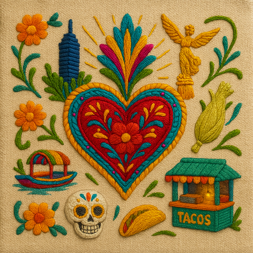
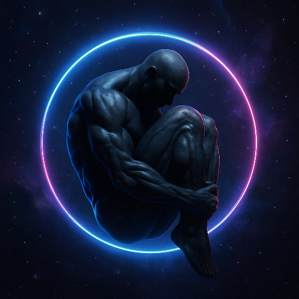
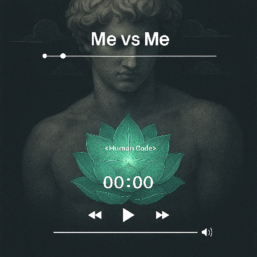

Explora mis GPTs GRATIS
🧠 Image-ADS
Transforma imágenes comunes en piezas publicitarias emocionalmente potentes.
- Generación de imágenes DSLR/35mm/estudio con plantillas dinámicas
- Fotos peorfesionales por plataforma
- Crea versiones A/B de producto
- Imagenes publicitarias de impacto

🌆❤️ Corazón Chilango
Explora la CDMX con corazón viajero y alma chilanga. El pulso de la ciudad, contado por quien la ama, con recomendaciones reales y experiencias auténticas.
- Recomendaciones gastronómicas que no debes perderte.
- Cartelera cultural y eventos
- Tienes una emergencia. Contáctanos
- Tu primera vista a CDMX. ¡Esto es lo que no debes perderte!.
- Consejos de movilidad y seguridad

🧠 #SinRodeos (Orientador Emocional).
Ejercicios terapéuticos claros, estructurados y aplicados sin tecnicismos.
- Lenguaje accesible para apoyo emocional
- Técnicas de apoyo en momentos de crisis.
- Protocolos de más de 25 ejercicios (CBT, ACT, DBT, EMDR, etc.)
- Reflexión emocional y fomento de ayuda profesional

🧘 Conexión-Divina
Guía espiritual basada en múltiples religiones para consuelo y paz interior.
- Consejos inspirados en textos sagrados
- Fomento de perdón y empatía
- Lecturas adaptadas para introspección
- Validación emocional

🔧 GPT de demostración
Este espacio está reservado para un futuro GPT. Aquí aparecerá su descripción.
- Funcionalidad destacada
- Beneficio claro
- Aplicación práctica
- Listo para usar
🔧 GPT de demostración
Este espacio está reservado para un futuro GPT. Aquí aparecerá su descripción.
- Funcionalidad destacada
- Beneficio claro
- Aplicación práctica
- Listo para usar